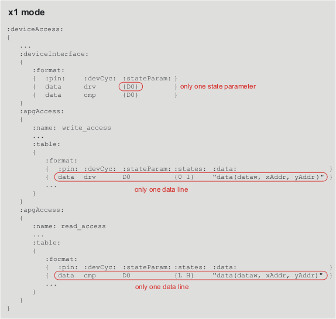
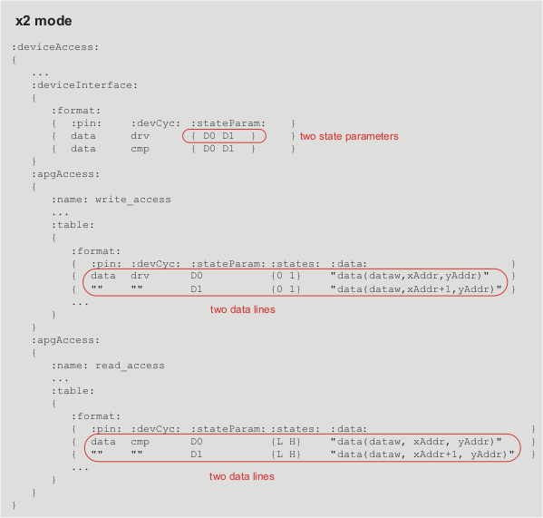
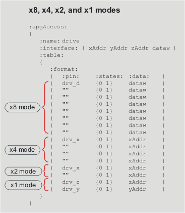

Setting up the x2 mode in the device access file
In x1 mode, each device access is covering only one test system cycle, which is described by one data line D0 (see following figure).

In x2 mode, each device access is covering two test system cycles, which are represented by two data lines D0 and D1 (see following figure).

The example below uses the x1, x2, x4, and x8 modes.
